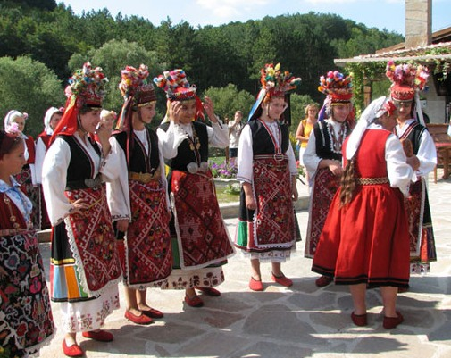
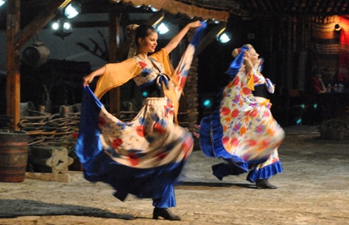

Болгария является одной из старейших европейских стран, и насчитывает тысячилетия истории.
Болгария соединяет Европу с Азией. Замечательная страна обладает живописными пейзажами, широкими долинами и высокими заснеженными горами.
Но больше всего иностранных туристов привлекают широкие песчанные пляжи и чистое Черное море.

Расположенная на пересечении культур и цивилизаций, Болгария сохранила свои земли с богатым культурным наследием.
Сочетание красивейшей природы с множеством культурных памятников создает все необходимые условия для развития культурного туризма.
Многие культурные наследия сохранились до наших дней: золотые сокровища фракийских курганов, остатки римской цивилизации, бани, театры, церкви, монастыри.
Средневековые рукописи оставили в живых болгарский язык и алфавит, а также в них описаны народные обычаи, праздники, музыка, песни, что свидельствует о богатой духовной культуре.
Важнейшим элементом болгарской богатой культуры можно считать народную музыку,фольклор, народную песню и, конечно же болгарские народные танцы.
При исполнении традиционной болгарской музыки, используются всем известные инструменты, такие как: скрипка, мандолина, флейта, волынка, дудук, двойные трубы и барабаны.
Такие ансамбли как " Космические голоса", "Тайна болгарских голосов", фольклорный ансамбль "Пирин " - известные коллективы на весь мир.

Самым главным символом Болгарии можно назвать розу. Сбор розы в древности был настоящим ритуалом, а теперь стал туристической достопримечательностью.
Розоварение -одно из древнейших и традиционных занятий болгар.
Болгарский национальный костюм – неотъемлемая часть быта и культуры всего болгарского народа.
В его внешнем виде переплетаются тракийские, славянские и древнеболгарские мотивы.
Главный элемент – белая рубашка, у которой длинные рукава. Поверх рубахи – всевозможные украшения.
Однако каждая этнографическая группа имеет свои детали и элементы.
Болгарская кухня
Кухня в Болгарии считается пикантной, и вы по достоинству сможете ее оценить.
В ней присутствует множество блюд из овощей: это и всевозможные салаты, и супы, и гарниры, и просто нарезанные свежие овощи.
"Шопска" – самый популярный в Болгарии салат. Его делают из свежих овощей (лука, болгарского сладкого перца, огурцов и помидоров) и сыра, похожего на брынзу.
Туристы, посещая страну, обязательно должны отведать блюда в горшочках.
Это может быть рыба, запеченная с луком и пряными травами, мясо или курица в соусе,
долма́ (толма, сарма) – блюдо, представляющее собой начинённые овощи или листья,
голубцы в виноградных листьях, кьополу – печеные баклажаны с орехами и чесноком,
кебапчета – своеобразный люля–кебаб с большим количеством специй, но без лука,
"Родопское чеверме" – мясо ягненка, запеченное на огне вместе с гарниром.
В качестве гарнира чаще всего используют сладкий перец, начиненный фаршем,
молочная баница – рулет с брынзой из слоеного теста, катми – блинчики с медом и орехами.
Нельзя не упомянуть о прекрасном болгарском вине, приготовленном из винограда, впитавшего в себя тепло солнечных лучей.
Ценители не зря сравнивают белые вина Болгарии с калифорнийскими, а красные – с бордосскими.
Среди наиболее известных вин – Шардоне, Каберне и Мерло.